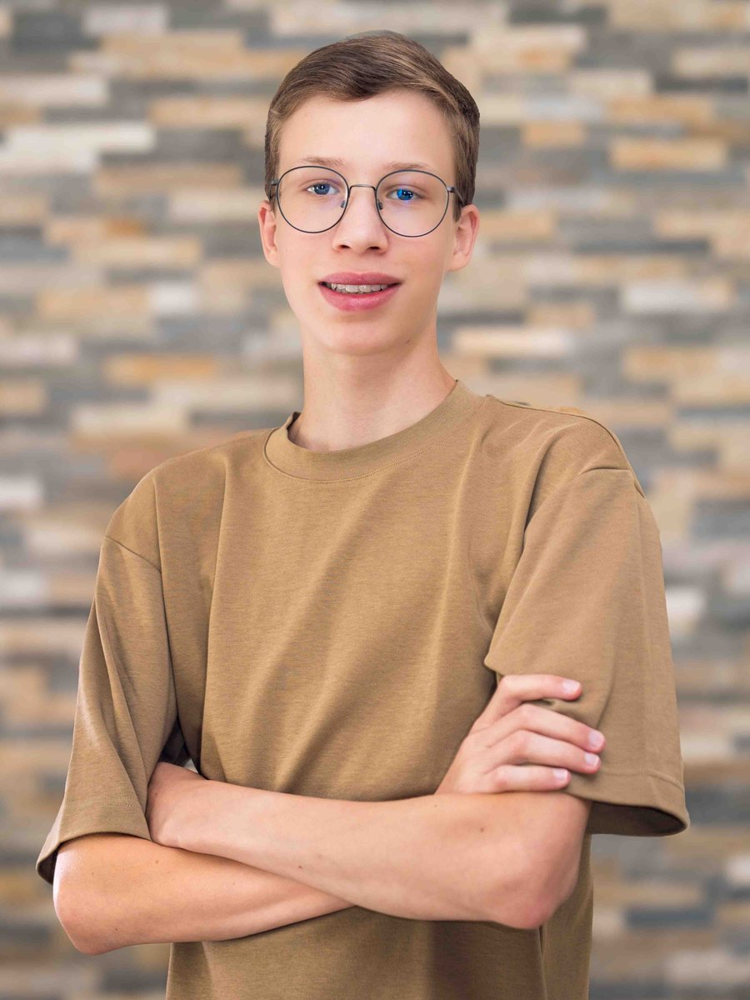

POSTCARD-CHALLENGE
Teamprojekt am SZ Ybbs. Sonderpreis der Jury in der Kategorie Clip, vergeben von der Diözese St. Pölten im Mai 2026.
Ich bin Oskar. 15, Filmemacher.
Ich dokumentiere meinen Weg in die Filmbranche. Echte Projekte statt Theorie.
SCROLLEN
Teamprojekt am SZ Ybbs. Sonderpreis der Jury in der Kategorie Clip, vergeben von der Diözese St. Pölten im Mai 2026.

Mein erster eigener Kurzfilm, ein Drama über Mobbing. Drehbuch, Regie, Kamera und Schnitt selbst gemacht.
Meine liebsten Aufnahmen, unterwegs und auf Reisen entstanden. Keine Auftragsdrehs, einfach Momente die mir gefallen.



Ich besuche die IT-HTL Ybbs mit Schwerpunkt Medientechnik. Die Technik dahinter lerne ich in der Schule, das Filmemachen selbst ist meine eigene Leidenschaft. Ich schreibe, drehe und schneide meine Projekte komplett selbst, von der ersten Idee bis zum fertigen Film.
Angestoßen von meinem Religionslehrer entstand so mein erster eigener Kurzfilm: ALLEIN, über Mobbing.
Mit 15 die erste Auszeichnung: Sonderpreis der Jury in der Kategorie Clip, Postcard-Challenge 2026 mit dem Film "Was kommt danach?".
Kein Masterplan. Nur eine Regel: jedes Projekt besser als das letzte. Und der ganze Weg wird gezeigt, Fehler inklusive.
Auf YouTube dokumentiere ich den ganzen Weg als fortlaufende Doku-Serie. Keine Tutorials, keine Tipps von oben herab. Nur was ich mache, was schiefgeht und was ich daraus lerne.
FOLGE / WARUM KEINE FILMSCHULE
FOLGE / HINTER DEN KULISSEN VON ALLEIN
FOLGE / MEIN ERSTER DREH
Projekt, Frage oder einfach Hallo sagen. Schreib mir, ich antworte innerhalb von 24 Stunden